When schools went remote in 2021, attendance moved into WhatsApp groups and admins were left reconciling it by hand. I designed Teno's Teacher Attendance module, a web console for admins and a mobile flow for teachers, that turns daily guesswork into rules set once.
Product
TenoSchool app · web + Android/iOS
Users
Admins + teachersWeb console · mobile app
Methods
Research → testingInterviews · surveys · IA · usability
Role
Product DesignerEnd to end
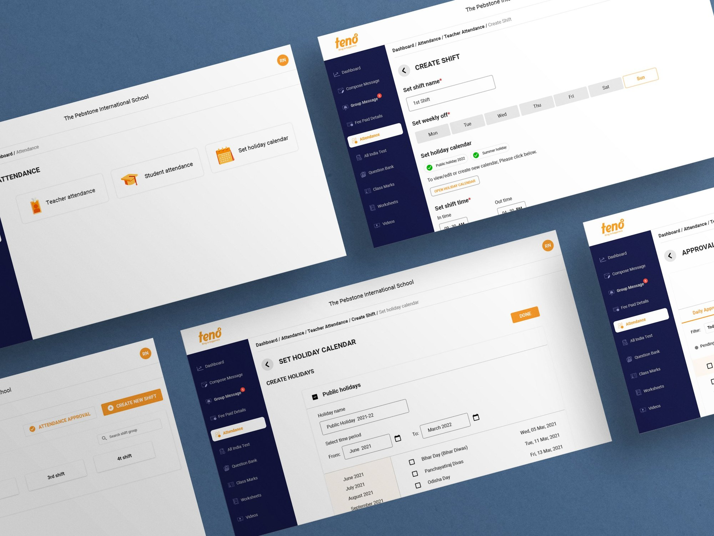
Teno Teacher Attendance · The admin web console: attendance home, create shift, holiday calendar, shift list and approvals
01The problem
The pandemic broke the attendance register. With teachers working from home, there was no biometric machine or sign-in sheet left, so schools fell back on WhatsApp: each teacher texted a login and logout time, and the admin copied them into Excel at day's end.
That workaround failed in three ways:
Late or missing data
Teachers forgot to post, or posted hours later, so admins chased people every evening.
Manual maths
Admins worked out each teacher's hours to decide full day or half day, one by one.
Payroll errors
Patchy records made salary calculation slow and, at times, wrong.
Multiple schools asked Teno for the same thing: a way for teachers to mark their own attendance, and for admins to approve it and keep the record.
The brief
Design a system where teachers mark daily attendance and leave on mobile, and admins approve and maintain that data on the web.
02What we heard
Before designing anything, I ran open-ended interviews with admins and teachers, backed by a survey and a competitive benchmark of attendance tools. Sample: 8 admins and 40 teachers across 8 schools, plus 121 survey responses. The interviews were in Hindi and Marathi, school staff working in their own languages, not office workers used to HR software.
“सब का attendance मुझे मार्क करना पड़ता है।”
“I have to mark everyone's attendance myself.”
School admin · Hindi
“कधी कधी मी विसरून जातो ॲडमिनला inform करायला की मी logged out केलं…”
“Sometimes I forget to tell the admin I've logged out.”
Teacher · Marathi
Finding
Heard from
Admins were the human database, re-entering every WhatsApp message into Excel
Admins
Teachers forgot to report in and out times, and nothing reminded them
Teachers
Full day vs half day was calculated by hand for each teacher, every day
Admins
Messy records turned payroll into a slow, error-prone task
Admins
03Two people, two screens
Pranav Sharma, 38
School admin · Desktop
Context
13 years running admin at a mid-size school; keen on tools that cut his workload
Today
Collects WhatsApp check-ins, types them into Excel, works out hours
Needs
Teachers mark their own attendance; he only approves; the data stays clean
Suvidha Mane, 48
High-school teacher · Phone
Context
26 years teaching history and Marathi to classes 8–10; carries most of the household load
Today
Forgets to post her times on busy days, then backfills them from memory
Needs
A reminder when she hasn't marked in or out, and an easy way to fix a missed day
How might we
let teachers record their day in seconds, and let admins approve a whole school's attendance without doing the maths themselves?
04Design goals
01
Set rules once, not decisions daily
If the admin defines timings, late marks and holidays up front, the system can judge full day, half day or late on its own.
02
Make the right action the easy one
Marking in and out should take one tap, with a nudge when it's missed and a clear route to fix it.
03
Fit how schools actually run
Multiple timings, regional holidays and local leave policies had to be expressible, not forced into one template.
05Structuring the system
I mind-mapped the admin and teacher sides together, then cut the result into a site map. The key move: the shift became the parent object. Every rule a school cares about, week-off, in and out time, late mark, half day, holidays, which teachers, lives inside a shift, so one school can run several timings without extra setup.
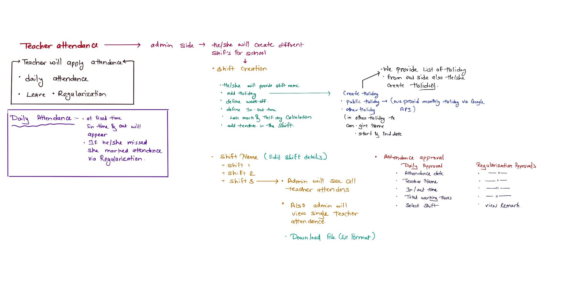
Brainstorm · Mind map of the admin side (shift creation, holidays, approvals) and the teacher side (daily attendance, leave, regularisation)
Attendance became one branch with three clear jobs
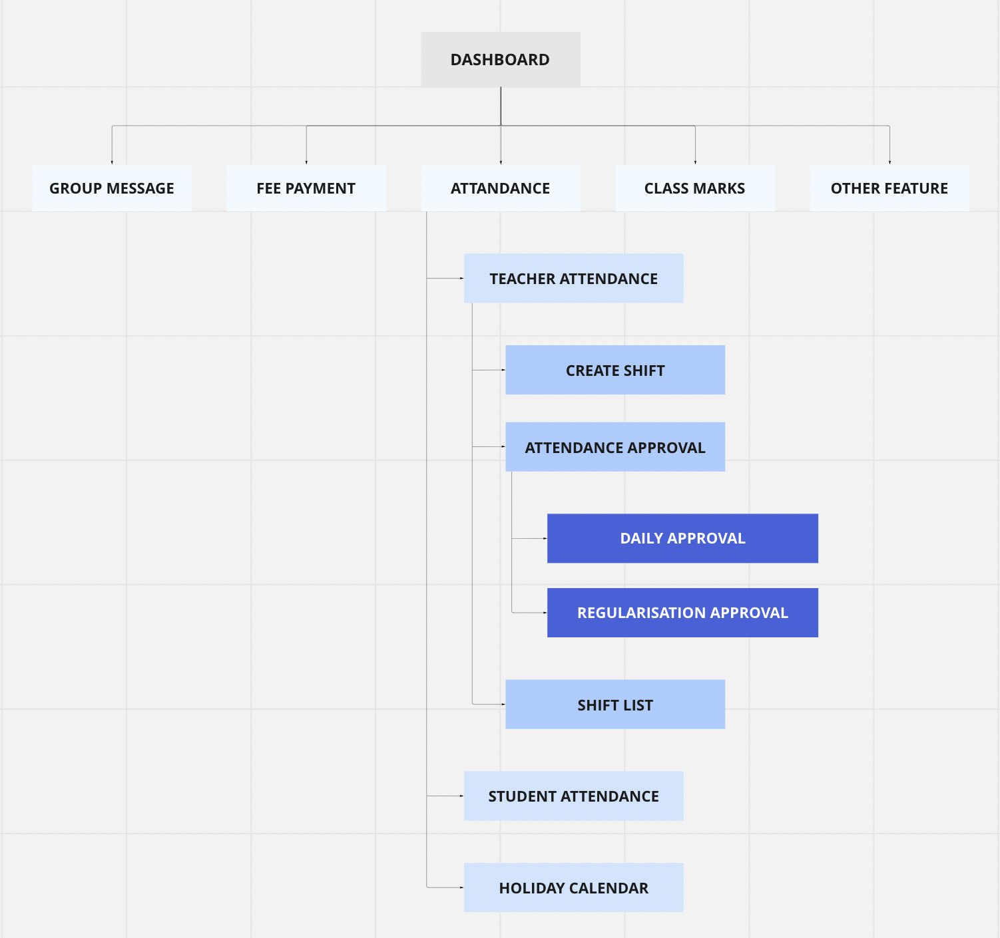
Site map · Approval sits under Teacher attendance and splits into three tabs, so an admin clears one kind of request at a time.
The admin's core task flow, from login to a cleared queue
User flow · From the dashboard to a cleared daily approval, with approve / reject for each teacher
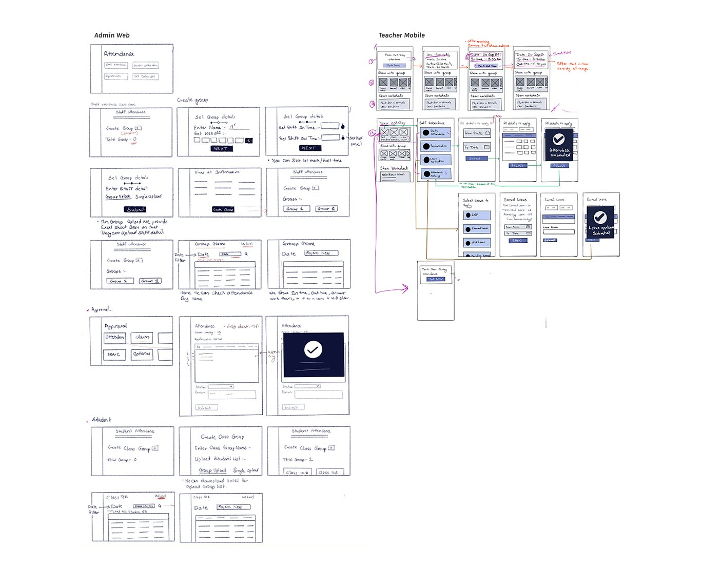
Lo-fi sketches · Admin web (left) and teacher mobile (right), sketched on paper before any pixels
06Four decisions that carry the design
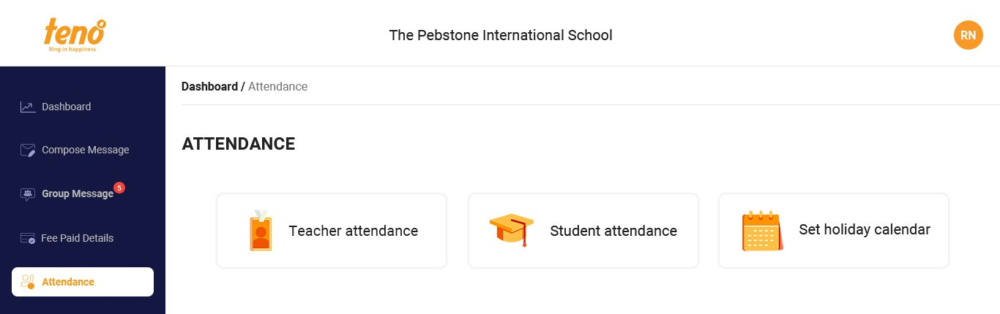
Attendance home · the entry point: teacher attendance, student attendance and the holiday calendar
Decision 1
The shift holds the rules
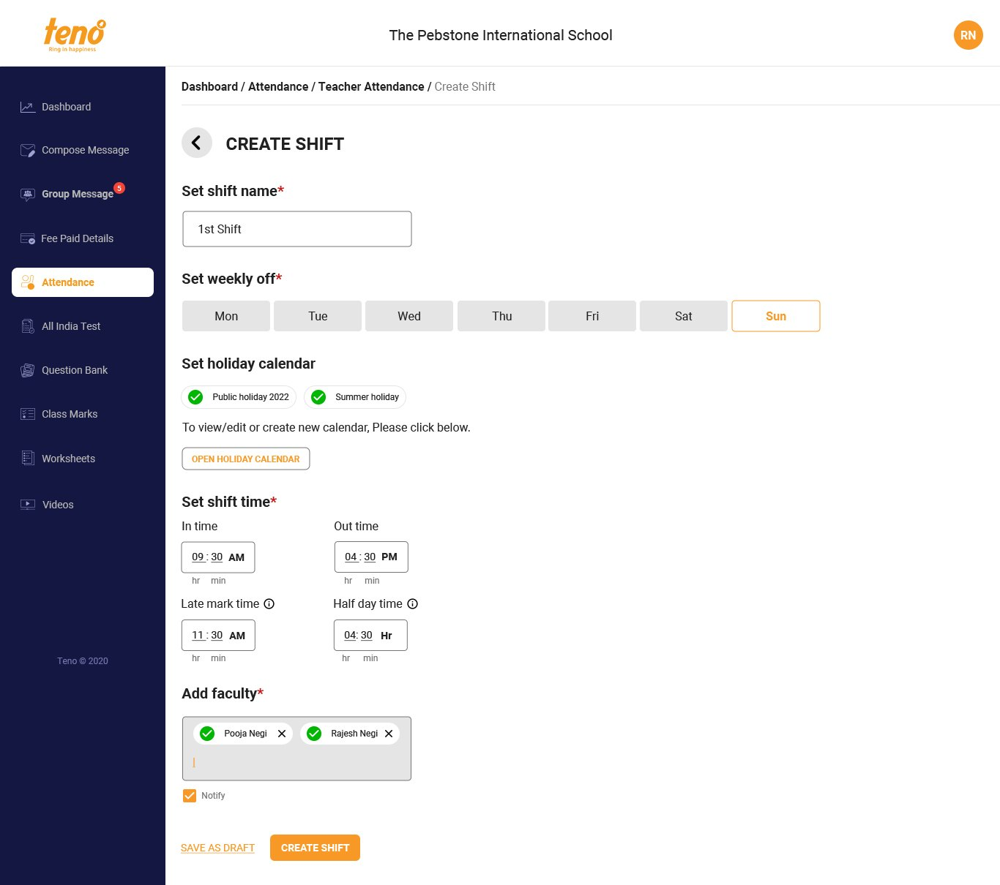
Create shift · 1st shift
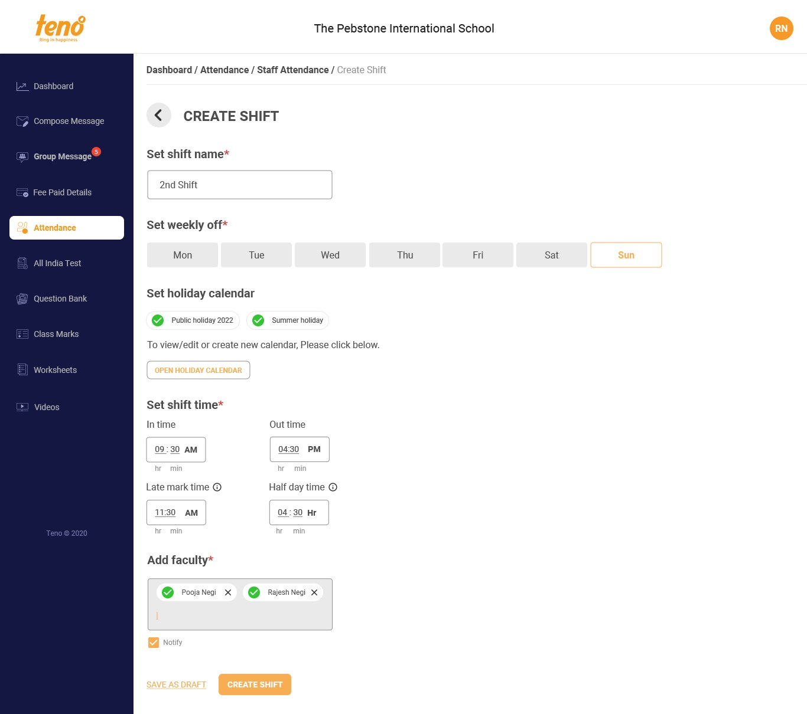
Create shift · 2nd shift, same rules, different timing
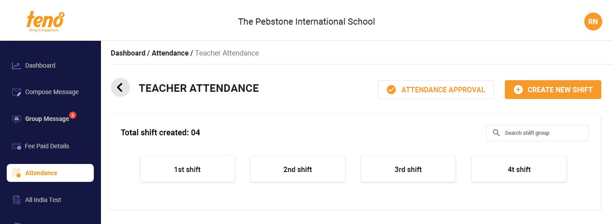
Shift list · one school, several timings
Problem
Admins re-judged every teacher's day by hand.
Decision
One Create Shift form captures shift name, weekly off, holiday calendar, in and out time, late-mark time, half-day threshold and the teachers in it. Late mark and half day carry info tooltips, because these terms vary from school to school.
Why it matters
The admin decides once; the system classifies every day after that.
Decision 2
Holidays as reusable calendars
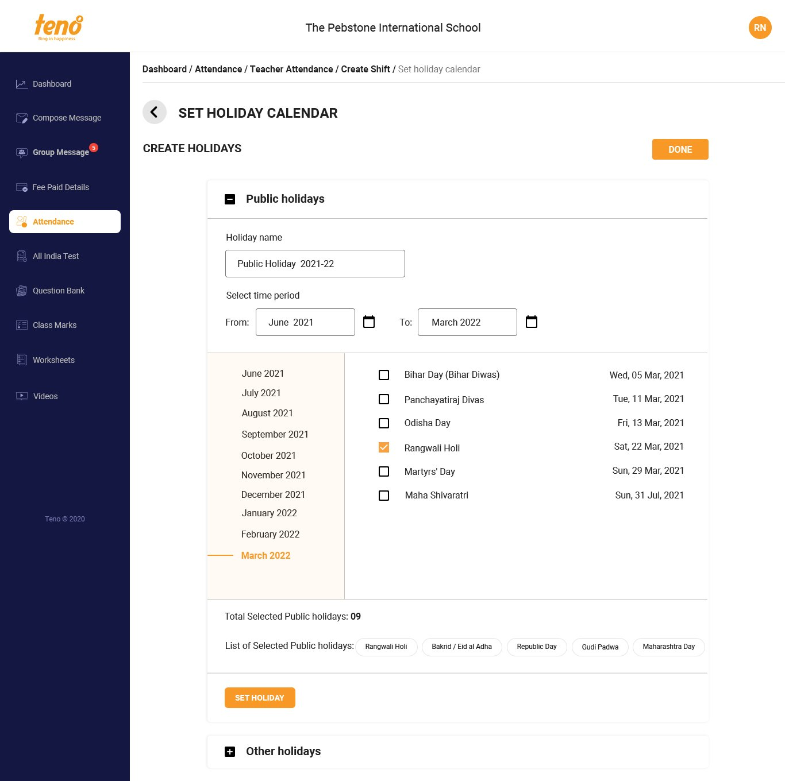
Set holiday calendar
Problem
Holidays differ by state and by school, and re-entering them per shift would be tedious.
Decision
A Set Holiday Calendar screen with a pre-filled list of public holidays the admin ticks, plus custom “other holidays” with name and dates. Each saved calendar can be attached to any shift.
Why it matters
A Maharashtra school and a Bihar school use the same tool without workarounds.
Decision 3
Approvals by type, in bulk
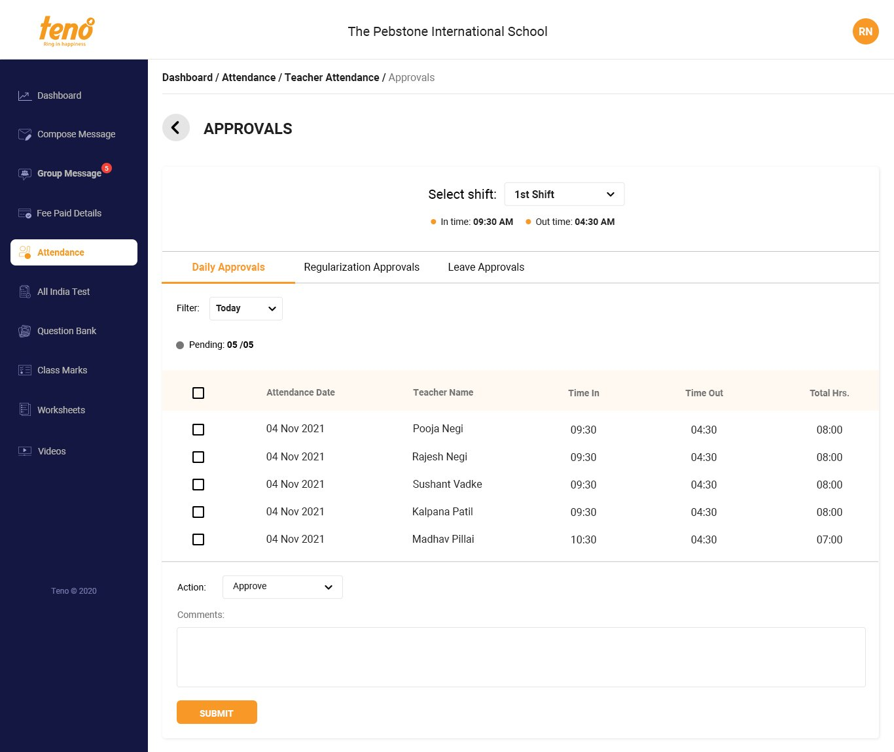
Approvals, Daily tab, filtered by shift
Problem
The admin's queue mixed everyday check-ins with exceptions.
Decision
Approvals split into Daily, Regularisation and Leave tabs, filtered by shift. Each row shows date, name, in, out and total hours already calculated; the admin multi-selects and approves or rejects with one comment.
Why it matters
Routine check-ins are cleared in a few clicks, so attention goes to the exceptions.
Decision 4
Self attendance on the teacher's phone
Problem
Teachers forgot to report, and there was no way to fix a missed day.
Decision
A Self Attendance screen with one-tap mark in and out, a month calendar showing each day's status (present, absent, weekly off, pending, holiday), a reminder when a day isn't marked, regularisation for missed marks, and leave requests with balances.
Why it matters
Suvidha's “I forgot” becomes a notification and a two-step fix, not an evening phone call.
07Testing with real admins
I tested the hi-fi prototype (v5) with 6 school admins in unmoderated, recorded sessions. The task: create a shift and add teachers to it.
6:32Avg. time on task · range 4:13–8:29
11%Avg. misclick rate · range 5–17%
6/6Sessions recorded on Chrome
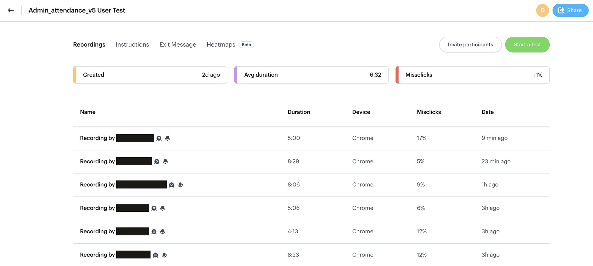
Test dashboard · Six recorded sessions of the admin flow; participant names redacted
The sessions surfaced six issues, most of them about real school policy the form couldn't yet express:
What we saw
What it told us
Design response
Some schools apply a sandwich-leave policy
Leave rules vary by school
Sandwich-rule toggle in shift setup
Some schools give alternate Saturdays off
Weekly off isn't always weekly
1st/3rd or 2nd/4th Saturday option
Admins were unsure what Half day and Late mark meant
Labels assumed shared definitions
Info tooltips with a worked example
Admins wanted to limit where teachers can mark from
Trust needs a location check
Geofence / location on each record
Notification wording felt unclear
Messages read as system-speak
Copy rewritten in plain language
Too many colour legends in the approvals table
Colour was overloaded
Legend trimmed to fewer statuses
08Outcome
Teacher Attendance moved schools from WhatsApp-and-Excel to in-app, self-marked attendance with rule-based approval.
Before
WhatsApp + Excel
Teachers texted times; admins typed them up and did the maths
→
After
In-app, self-marked
Teachers mark in one tap; admins approve by rule, in bulk
09What I'd do differently
01
Test policy before pixels
Four of the six test findings were school policies, sandwich leave, alternate Saturdays, location rules, not UI problems. A policy survey before wireframes would have caught them a round earlier.
02
Rules as configuration, not fields
Each new policy became another form field. A rules-builder pattern would scale better as schools add edge cases.
03
Measure from day one
I'd set baseline metrics, admin minutes per day, missed marks per week, before launch, so the impact story writes itself.